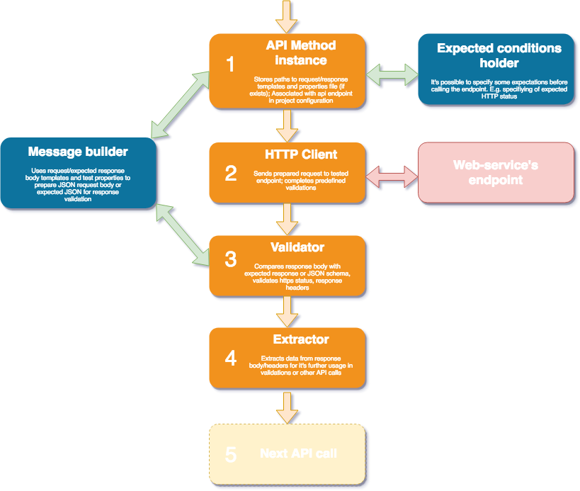
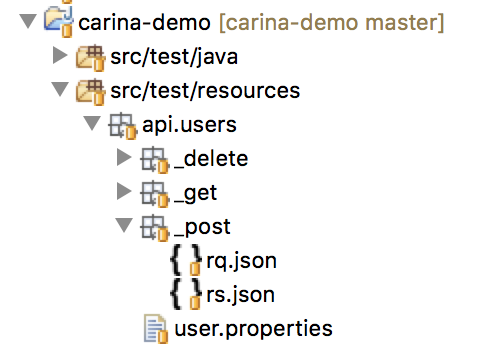
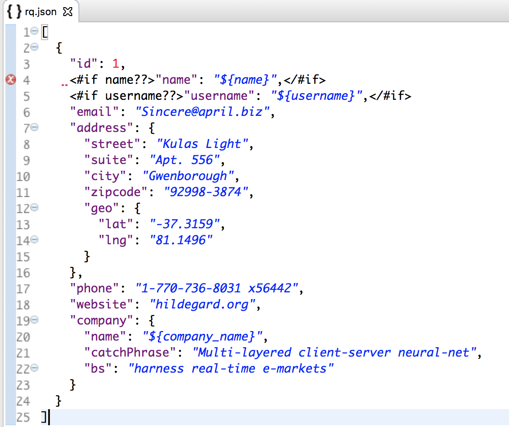
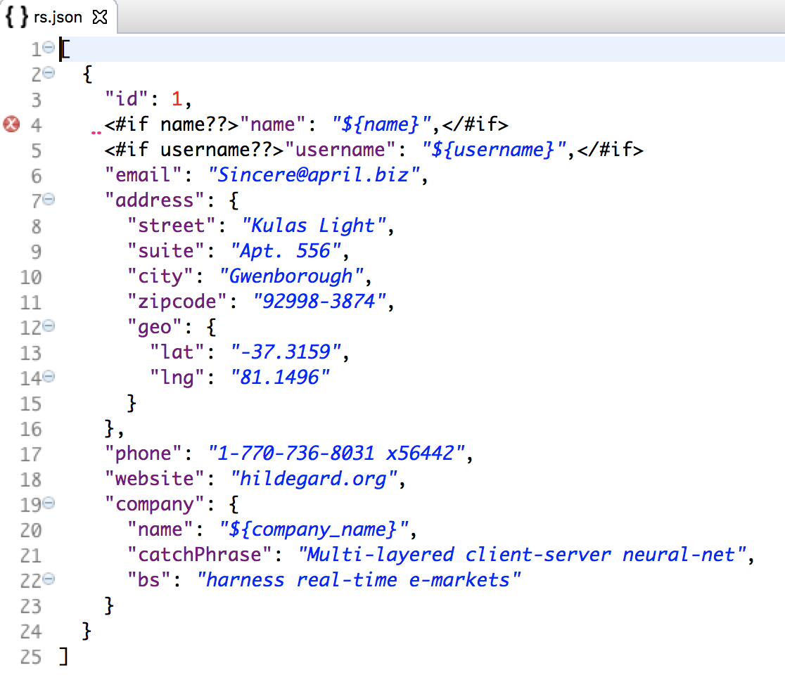

API

Note: Starting from 7.0.4 consider that instead of extends AbstractTest we have to implements IAbstractTest interface
Introduction
Rest API testing is a vital part of integration testing process, it may be used separately or together with web, mobile or DB testing. The general process may be described by the following steps:
- Compile an HTTP request with the required meta data
- Send the prepared data to the required server endpoint
- Validate the HTTP status and response data
- Extract some response data for the next requests
- Build a call to the next (or the same) endpoint using (or not using) the data from the previous response
The schema below demonstrates the sequence: 
From this perspective, we decided to use the following instruments:
- Rest-assured - "Testing and validation of REST services in Java are harder than in dynamic languages such as Ruby and Groovy. REST Assured brings the simplicity of using these languages into the Java domain."
- Freemarker - "Apache FreeMarker is a template engine: a Java library to generate text output (HTML web pages, e-mails, configuration files, source code, etc.) based on templates and changing data."
- JsonPath - a library for extracting data from JSON body
- JsonAssert - a library for comparing the actual JSON body with an expected one
- Json-schema-validator - a library for validating of JSON body for matching to JSON schema
Example of test implementation
Let's create an automated test for the next call: POST https://jsonplaceholder.typicode.com/users request with a request body
[
{
"id": 1,
"name": "SOME_NAME",
"username": "SOME_USERNAME",
"email": "Sincere@april.biz",
"address": {
"street": "Kulas Light",
"suite": "Apt. 556",
"city": "Gwenborough",
"zipcode": "92998-3874",
"geo": {
"lat": "-37.3159",
"lng": "81.1496"
}
},
"phone": "1-770-736-8031 x56442",
"website": "hildegard.org",
"company": {
"name": "SOME_COMPANY_NAME",
"catchPhrase": "Multi-layered client-server neural-net",
"bs": "harness real-time e-markets"
}
}
]
and the response body the same as the request body
Definition of request and response templates
If we are going to send POST request, we need to create a request template with some placeholders that may be replaced by different arguments for different test flows. The best place to store these resources is src/test/resources/api package, try to keep REST hierarchy in a package structure for better maintenance and visibility:

Request (rq.json) and response (rs.json) templates have some placeholders that will be populated from the tests later on:


While user.properties contains some default value which may be replaced later:

REST service call domain object
Now we are ready to create REST service domain object which will be used to interact with web service and perform additional response validations. Our domain object is located in /carina-demo/src/main/java/com/qaprosoft/carina/demo/api, make sure that it extends AbstractApiMethodV2 and triggers the base class constructor for initialization. In general cases, you will specify the path to request and response templates along with default properties files (all of them have been created in the previous step). Also, we replace the URL placeholder to set an appropriate environment.
package com.qaprosoft.carina.demo.api;
import com.qaprosoft.carina.core.foundation.api.AbstractApiMethodV2;
import com.qaprosoft.carina.core.foundation.utils.Configuration;
public class PostUserMethod extends AbstractApiMethodV2 {
public PostUserMethod() {
super("api/users/_post/rq.json", "api/users/_post/rs.json", "api/users/user.properties");
replaceUrlPlaceholder("base_url", Configuration.getEnvArg("api_url"));
}
}
HTTP method and path
The last step before the test implementation itself is the association of the domain object class and the required HTTP method and path. It should be defined in /carina-demo/src/main/resources/_api.properties file, the key should be equal to domain class name, the value has the following pattern {http_method}:{http_path}. The HTTP path may contain placeholders, the HTTP method should be one of the following variants: GET, POST, PUT, UPDATE, DELETE.
#=====================================================#
#=================== API methods ====================#
#=====================================================#
GetUserMethods=GET:${base_url}/users
PostUserMethod=POST:${base_url}/users
DeleteUserMethod=DELETE:${base_url}/users/1
PutPostsMethod=PUT:${base_url}/posts/1
PatchPostsMethod=PATCH:${base_url}/posts/1
API test
API test is a general TestNG test, a class should extend APITest, in our case, the test implements IAbstractTest that encapsulates some test data and login method. The test is located in /carina-demo/src/test/java/com/qaprosoft/carina/demo.
package com.qaprosoft.carina.demo;
import java.lang.invoke.MethodHandles;
import com.qaprosoft.carina.core.foundation.IAbstractTest;
import org.skyscreamer.jsonassert.JSONCompareMode;
import org.slf4j.Logger;
import org.slf4j.LoggerFactory;
import org.testng.annotations.Test;
import com.qaprosoft.apitools.validation.JsonCompareKeywords;
import com.qaprosoft.carina.core.foundation.api.http.HttpResponseStatusType;
import com.qaprosoft.carina.core.foundation.utils.ownership.MethodOwner;
import com.qaprosoft.carina.core.foundation.utils.tag.Priority;
import com.qaprosoft.carina.core.foundation.utils.tag.TestPriority;
import com.qaprosoft.carina.demo.api.DeleteUserMethod;
import com.qaprosoft.carina.demo.api.GetUserMethods;
import com.qaprosoft.carina.demo.api.PostUserMethod;
/**
* This sample shows how create REST API tests.
*
* @author qpsdemo
*/
public class APISampleTest implements IAbstractTest {
private static final Logger LOGGER = LoggerFactory.getLogger(MethodHandles.lookup().lookupClass());
@Test()
@MethodOwner(owner = "qpsdemo")
public void testCreateUser() throws Exception {
LOGGER.info("test");
setCases("4555,54545");
PostUserMethod api = new PostUserMethod();
api.expectResponseStatus(HttpResponseStatusType.CREATED_201);
api.callAPI();
api.validateResponse();
}
@Test()
@MethodOwner(owner = "qpsdemo")
public void testCreateUserMissingSomeFields() throws Exception {
PostUserMethod api = new PostUserMethod();
api.getProperties().remove("name");
api.getProperties().remove("username");
api.expectResponseStatus(HttpResponseStatusType.CREATED_201);
api.callAPI();
api.validateResponse();
}
@Test()
@MethodOwner(owner = "qpsdemo")
public void testGetUsers() {
GetUserMethods getUsersMethods = new GetUserMethods();
getUsersMethods.expectResponseStatus(HttpResponseStatusType.OK_200);
getUsersMethods.callAPI();
getUsersMethods.validateResponse(JSONCompareMode.STRICT, JsonCompareKeywords.ARRAY_CONTAINS.getKey());
getUsersMethods.validateResponseAgainstSchema("api/users/_get/rs.schema");
}
@Test()
@MethodOwner(owner = "qpsdemo")
@TestPriority(Priority.P1)
public void testDeleteUsers() {
DeleteUserMethod deleteUserMethod = new DeleteUserMethod();
deleteUserMethod.expectResponseStatus(HttpResponseStatusType.OK_200);
deleteUserMethod.callAPI();
deleteUserMethod.validateResponse();
}
}
Test steps once again
- Create REST call object
- Specify the properties for a request/response placeholder
- Add headers if required
- Specify the expected HTTP status
- Call API
- Validate the response by a template or parse some data by JSON path
- Make further calls using the data from the previous call if needed
Useful features
The framework contains a list of useful features for building requests and validation of responses. It makes the support of such tests easier and at the same time minimizes the amount of test data.
Wildcards
In some cases, you may need to generate data in the request to make the request data unique. The best way to do this is to use wildcards for data generation:
{
"username": "generate_word(10)", // Will generate random alphanumeric string with 10 characters
"zip": "generate_number(6)", // Will generate random number with 6 digits
"birthday": "generate_date(yyyy-MM-dd;0)" // Will generate current date (first arg is date format, second is delta in days from now)
}
Another option is to specify the placeholder in the request template and then pass some generated value directly from the test method.
Wildcards are also useful for response validation. In some cases, you may need to skip some values or validate by regex:
{
"id": "skip", // Will skip actual value validation and just verify id key presence
"signup_date": "regex:\\d{4}-\\d{2}-\\d{2}", // Will validate date value by specified regex
}
Validation against JSON schema
When you need to validate response structure regardless of the actual values, you may use validation by JSON schema. In this case, you need an actual response from the service, let's say we have the following:
{
"email": "test@domain.com",
"firstName": "SOME FIRST NAME",
"id": 11111
}
Now we need to generate a schema (you may use any generator you like, for example, https://jsonschema.net/).
IMPORTANT: For now, the schemas of version draft03 and draft04 are supported only. Please, use the appropriate generator (e.g. https://www.liquid-technologies.com/online-json-to-schema-converter)
In the tool like this you need to provide the original JSON from the response, then choose some schema options (allow the additional properties in objects, mark the current object properties as required, hard-code some expected values, etc.) and then generate the schema. Copy-paste the generated schema into test resources, and you're ready to use it in the test.
 Make sure that you change all the required flags to true. After that, create a new file in the resources and place it into an appropriate endpoint package:
Make sure that you change all the required flags to true. After that, create a new file in the resources and place it into an appropriate endpoint package:
{
"type":"object",
"$schema": "http://json-schema.org/draft-03/schema",
"id": "http://jsonschema.net",
"required":true,
"properties":{
"email": {
"type":"string",
"id": "http://jsonschema.net/email",
"required":true
},
"firstName": {
"type":"string",
"id": "http://jsonschema.net/firstName",
"required":true
},
"id": {
"type":"number",
"id": "http://jsonschema.net/id",
"required":true
}
}
}
And finally, we call JSON validation from Java test as the following:
@Test
public void testCheckJSONSchema()
{
PostUserLoginMethod api = new PostUserLoginMethod();
api.expectResponseStatus(HttpResponseStatusType.OK_200);
api.callAPI();
api.validateResponseAgainstJSONSchema("api/testdata/users/login/_post/rs.schema");
}
Building requests with an array
There are a couple of options for building a request with an array of items provided by the framework: 1. The first one uses hardcoded placeholders for changeable variables.
{
"name": "${name}",
"description": "${description}",
"label": "${label}",
"taskTypes": [
{
"name": "${task_name_1}",
"description": "${task_description_1}"
}
<#if task_name_2?exists || task_description_2?exists>,
{
"name": "${task_name_2}",
"description": "${task_description_2}"
}
</#if>
<#if task_name_3?exists || task_description_3?exists>,
{
"name": "${task_name_3}",
"description": "${task_description_3}"
}
</#if>
]
}
As you see, this structure is quite flexible. If you need 2 taskTypes items, you need to declare at least task_name_2 or task_description_2 property. If you need 3 items in addition to that, you need to declare a task_name_3 or task_description_3 property. Otherwise, the array will contain only 1 item. For instance, you need to build JSON which contains a taskTypes array. Then the template with placeholders will be the following: It's easy to extend such a structure. You just need to add items with similar placeholders increasing their index.
- Another approach is based on using Freemarker loop. Here is the template example for the same JSON:
<#if task_name_1?exists>
<#assign task_names = [task_name_1]>
<#assign task_descriptions = [task_description_1]>
</#if>
<#if task_name_2?exists>
<#assign task_names = [task_name_1, task_name_2]>
<#assign task_descriptions = [task_description_1, task_description_2]>
</#if>
<#if task_name_3?exists>
<#assign task_names = [task_name_1, task_name_2, task_name_3]>
<#assign task_descriptions = [task_description_1, task_description_2, task_description_3]>
</#if>
{
"name": "${name}",
"description": "${description}",
"label": "${label}",
"taskTypes": [
<#list 0..task_names?size-1 as i>
{
"name": "${task_names[i]}",
"description": "${task_descriptions[i]}"
}
<#if (i + 1) < task_names?size>,</#if>
</#list>
]
}
This approach is useful when the structure of an array item is quite complex. So, it makes sense to specify the item attributes only once, doing it inside #list operation. This approach also allows to choose the amount of array items dynamically. But note that you should specify all properties for every item, so this view cannot be used for negative tests when you need to miss some properties.
Validation of responses with an array
Sometimes you can face a situation when you need to validate the presence of only one item (or a couple of them) in a JSON array ignoring the rest of the items. In such case, you can use a validation option ARRAY_CONTAINS. Here is a code sample:
JSONAssert.assertEquals(expectedRs, actualRs, new JsonKeywordsComparator(JSONCompareMode.STRICT,
JsonCompareKeywords.ARRAY_CONTAINS.getKey() + "content"));
The expected array:
{
"totalElements": "skip",
"pageNumber": "skip",
"pageSize": "skip",
"content": [
{
"id": skip,
"brand": "skip",
"clientName": "CLIENT 1"
},
{
"id": "skip",
"brand": "skip",
"clientName": "CLIENT 2"
}
]
}
And the actual response:
{
"totalElements": 1017,
"pageNumber": 0,
"pageSize": 100,
"content": [
{
"id": 11111,
"brand": "test",
"clientName": "CLIENT 1"
},
{
"id": 22222,
"brand": "test",
"clientName": "CLIENT 2"
},
{
"id": 3333,
"brand": "test",
"clientName": "CLIENT 3"
},
{
"id": 4444,
"brand": "test",
"clientName": "CLIENT 4"
}
]
}
Deserialization of JSON
Sometimes you may need to transform your JSON response to POJO. It may be useful if you need to validate your response using the data from a database as the expected data. For this purpose, it's better to use Jackson libraries that are already included in Carina framework. For this, you need to prepare the domain class based on your JSON structure. Some online resources provide such opportunities, like https://timboudreau.com/blog/json/read. Let's say we need to deserialize an array of Clients from JSON. An example of the required domain object will be:
import org.codehaus.jackson.annotate.JsonCreator;
import org.codehaus.jackson.annotate.JsonProperty;
public final class Clients
{
public final Client clients[];
@JsonCreator
public Clients(@JsonProperty("clients") Client[] clients)
{
this.clients = clients;
}
public static final class Client
{
public final long id;
public final String brand;
public final String clientName;
......
@JsonCreator
public Client(@JsonProperty("id") long id, @JsonProperty("brand") String brand, @JsonProperty("clientName") String clientName,.....)
{
this.id = id;
this.brand = brand;
this.clientName = clientName;
.........
}
}
public Client[] getClients()
{
return clients;
}
}
Pay attention that POJO field names can differ from JSON properties. In this case, @JsonProperty annotation can be used for mapping. An example of a deserialization code:
GetClientsMethod getClientsMethod = new GetClientsMethod("11111");
getClientsMethod.expectResponseStatus(HttpResponseStatusType.OK_200);
String rs = getClientsMethod.callAPI().asString();
ObjectMapper mapper = new ObjectMapper();
Clients clients = mapper.readValue(rs, Clients.class);
Then you can use POJO object for any kind of validation or for easy retrieving of the required properties.
Security
Carina provides some security features that could be used to hide/protect sensitive data in your API calls.
Encryption of API method properties
It's possible to use default carina crypto logic for automatic decription of sensitive data.
In order to encrypt the data you can use carina's CryptoConsole
Then you can save your encrypted properties using default pattern: "{crypt:ENCRYPTED_TXT}"
During properties parsing process carina-api module will automatically decrypt the text and put decrypted value into request body.
Hiding of API request headers
In order to hide the value of API request header you need to annotate your API method with @HideRequestHeadersInLogs annotation. Usage sample:
@HideRequestHeadersInLogs(headers = "Content-Type")
public class YourAPIMethod extends AbstractApiMethodV2 {
public YourAPIMethod() {
}
}
Then in your test logs for mentioned headers you'll get "[ BLACKLISTED ]" mask
Hiding of API call body parts
If you want not to show some sensitive data in body of your api calls in test logs then you'll need to annotate your API method with @HideRequestBodyPartsInLogs/@HideResponseBodyPartsInLogs annotations.
These annotations support both json and xml content type.
As the value of annotation you need to pass array of JSON or XML paths you want to hide.
Once done in test logs you'll get "********" mask instead of actual values.
Example for json:
@HideRequestBodyPartsInLogs(paths = { "$.[*].username", "$.[*].id" })
@HideResponseBodyPartsInLogs(paths = { "$.[*].address.zipcode", "$.[*].address.geo.lat", "$.[*].id" })
public class YourAPIMethod extends AbstractApiMethodV2 {
public YourAPIMethod() {
}
}
Example for xml:
@HideRequestBodyPartsInLogs(paths = { "//root/city/text()" })
@HideResponseBodyPartsInLogs(paths = { "//root/state/text()" })
@ContentType(type = "application/xml")
public class XmlPostMethod extends AbstractApiMethodV2 {
public XmlPostMethod() {
}
}
Important: for XML content type it's obligatory to pass @ContentType annotation to your API method indicating actual header value.
If @ContentType is not specified then data will be automatically considered as JSON.